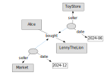

Reifiers & Graphs
RDF-star WG
TPAC 2024
Anaheim CA, USA
hybrid meeting
23–27 SEPTEMBER 2024
(Slides by Niklas Lindström, National Library of Sweden.)
A Simple Triple
:Alice :bought :LennyTheLion .
A propositional atom.
RDF 1.2: Triple Terms
A new kind of term, alongside IRIs, bnodes and literals.
<<( :Alice :bought :LennyTheLion )>>
- Compound, immutable three-tuples.
- Can be used as objects of a reifying predicate.
- Act as references to triples (the edges of the interpretation).
Triple Terms are Abstract
They are not occurrences, tokens or utterances.
Such things are concrete reifying resources of abstract triples.
Anything that acts as a concretization of abstract propositions is a reifier. It may be a contextual reference, event or circumstance, having a distinct identity and characteristics of its own.
Reifier Syntax
[] rdf:reifies
<<( :Alice
:bought
:LennyTheLion )>> .

Reifier Sugar
<< :Alice :bought :LennyTheLion >> .
Reifier of a Truth

<< :Alice :bought :LennyTheLion >> .
:Alice :bought :LennyTheLion .
Annotation Sugar
:Alice :bought :LennyTheLion {|
# ...
|} .
Kinds of Reifiers
The type of the reifier determines its nature (may be implied by predicates).
- References (utterances, source provenance).
- Circumstances (qualifying events or situations).
Provenance
:Alice :bought :LennyTheLion {|
:source :TXZ ;
:tstamp "0x66e"
|} .
Qualification

:Alice :bought :LennyTheLion {|
:seller :ToyStore ;
:date "2024-06"
|} .
Qualifications

:Alice :bought :LennyTheLion {|
:seller :ToyStore ;
:date "2024-06"
|} {|
:seller :Market ;
:date "2024-12"
|} .
Compound Qualification

:Alice :bought
:LennyTheLion ~ _:r1 .
:ToyStore :sold
:LennyTheLion ~ _:r1 .
_:r1 a :Purchase ;
:date "2024-06".
Compound Provenance

:Alice :bought
:LennyTheLion ~ _:r2 .
:ToyStore :sold
:LennyTheLion ~ _:r2 .
_:r2 a :Transaction ;
:source :TXZ ;
:tstamp "0x66e".
Varying Granularity
Use cases show reifiers of varying type, granularity and scope.
Examples include
source tokens of granular provenance, and
qualification of "too simple" relations needing more contextual detail.
In many cases singular triples need to be reified. But some are of multiple triples at once. The previous example showed bought and sold relations abstracted from a Purchase.
Name Forms
Another example is modelling of person names.
Some define just name; others, givenName and familyName.
A Naming may thus reify a single or multiple triples, depending on the modelling choice.
GRAPH <model-1> {
<Alice> :name "Alice Liddell" {|
a :Naming ;
:date "1852" |} .
}
GRAPH <model-2> {
<Alice> :givenName "Alice" ~ _:n ;
:familyName "Liddell" ~ _:n .
_:n a :Naming ;
:date "1852" .
}
Is a Reifier a Graph?
Not per se.
The triple terms reified are transparent; their constituent subject, predicate and object terms denote entities within the interpretation.
The reifying purchase is in the same domain of discourse as Alice, the plush lion, the store, and their relationships.
Triples In The Graph
The triples reified do form a potential subgraph of the graph in which the reifier is described. But a reifier is not necessarily defined only by the triple or triples it reifies.
For example, a purchase is a conceivable concretization of a bought and sold relationship, but it is not intrinsically defined by them. It has other properties, such as a point in time, a location, etc.
Unlike Graphs
- A graph is a set of triples. A graph of one triple is a different entity than one of two, even if the former is a subset of the latter.
- Reifiers have an
rdf:reifies relation to each of its triples. (Just as Alice has two parents, not a set of parents.) Each relationship holds individually, monotonically.
Using OWL, this can be constrained, e.g. on cardinality:
ex:StatementToken rdfs:subClassOf [ a owl:Restriction ;
owl:onProperty rdf:reifies ;
owl:cardinality 1 ] .
RDF Named Graphs
- A named graph is a pair of a name (IRI or bnode) and a graph (set of triples).
- There is no normatively defined relation between a named graph and the resource denoted by this name.
GRAPH <document> {
<document> a :Document .
}
An Insulating Gap
While the name of a named graph may denote anything, including a reifier, there is no relation from it to the graph, nor to the triples.
<purchase1> a :Purchase ;
:date "2024-06" .
GRAPH <purchase1> {
:Alice :bought :LennyTheLion .
:ToyStore :sold :LennyTheLion .
}
This prevents further modelling of the relationship between the reifier and its reified triples (such as cardinality, ranges or property chain axioms).
Outside of Graphs
Named graphs are for management of graphs in datasets, external to their interpretation(s).
There is no normatively defined interpretation for datasets.
- Can be used in practice as a union (see "union default graph" modes of many SPARQL stores, for querying over the union of all graphs in a dataset).
- Or as separate, isolated interpretations (e.g. Verifiable Credentials).
(See also the RDF 1.1: On Semantics of RDF Datasets note.)
Reifiers Unify Usage Patterns
The domain of rdf:reifies is open (of any type). Examples include:
- A token in a source document (classic reification
rdf:Statement).
- An utterance or linguistic expression encoded as multiple related triples ("a person named Alice Liddell").
- A source message or document ("T indicates that A bought B from C").
- A circumstance or event (a Collaboration, a Purchase, etc.).
This unifies the earlier dichotomy between classic reification and "that which named graph names may denote".
A Note About Abstract Graphs
The graph itself—as a mathematical set of triples—is reasonably not a concretization of itself.
It is a set of abstract triples.
Triple terms may play a role in defining such. Cf. Notation 3.
Thank You!
Time for questions?